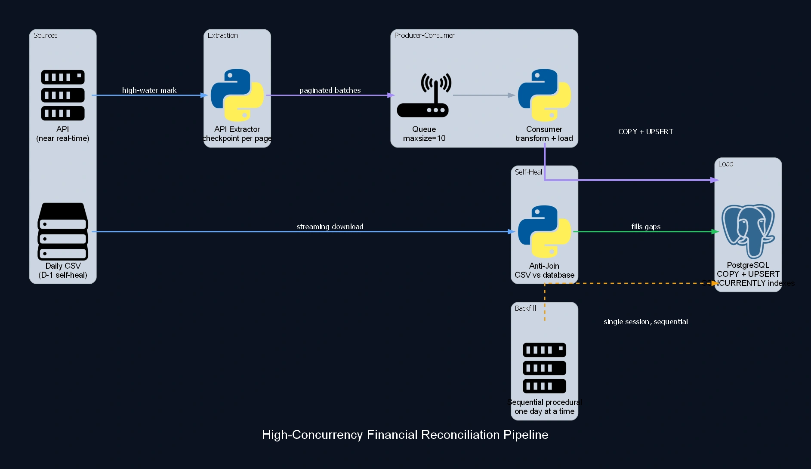
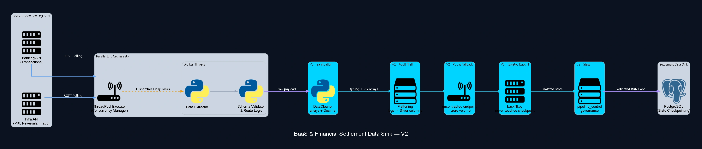

Projects
Ten data systems that ran, or still run, in production: continuous ingestion, accounting reconciliation, failure recovery and predictive modeling. The corporate cases appear anonymized for confidentiality, with no company, client or counterparty names, and no financial volumes. What remains is the architecture decision, the trade-off and the mechanism holding the result up. The one exception is the LCK Spring 2024 dataset, public on Kaggle and auditable by anyone.
Financial and banking data
Five ingestion and reconciliation pipelines over transactional, banking and fiscal data.
-
Unified Banking Ledger Platform

Unified ingestion platform for banking, PIX, ledger and OTC desk data, with per-domain state isolation and a transaction lifecycle auditor.
Python · PostgreSQL · Azure · SQL
-
High-Concurrency Financial Reconciliation Pipeline

Hybrid financial ingestion and reconciliation pipeline, with anti-join self-heal, per-page checkpoint and isolated sequential backfill.
Python · PostgreSQL · Azure · SQL
-
BaaS & Financial Settlement Data Sink

Programmatic integration pipeline centralizing multi-bank financial settlement data (BaaS), with payload sanitization and isolated backfill.
Python · Azure · REST API · PostgreSQL
-
OTC Desk Reconciliation Pipeline

Daily ETL that reconciles an operational spreadsheet with no stable primary key, using fuzzy matching, schema shielding and Full Replace.
Python · PostgreSQL · SQL
-
Fiscal Document Consolidation Pipeline

Monthly pipeline that downloads fiscal document XML/PDF pairs via API, resolves ownership by substring-matching the tax ID, consolidates per entity.
Python · PostgreSQL · REST API
Digital assets and blockchain
Three integrations across an exchange, institutional custody and direct blockchain node reads.
-
Enterprise Crypto Data Lake: Multi-Account Ingestion

Pipeline for ingesting dozens of institutional crypto exchange accounts, with an official-header rate limiter and >99.9% uptime in production.
Python · PostgreSQL · Azure · SQL
-
Unified Multi-Chain Ledger Integrator

Resilient pipeline consolidating transactions across dozens of blockchains (EVM/Solana) via RPC, reconciled to 100% integrity against on-chain supply.
Python · PostgreSQL · Azure · SQL
-
Institutional Digital Asset Custody Integrator

Ingestion orchestrator for institutional crypto custody, with credential-isolated workspaces and a 5-minute backfill overlap.
Python · REST API · Azure · PostgreSQL
Open data and machine learning
Predictive modeling in production, and a public dataset anyone can verify.
-
Predictive Pipeline in Competitive and ML Engine

End-to-end algorithmic engine for quantitative trading, with massive daily scraping and a predictive model validated at over 68% accuracy.
Python · PostgreSQL · Azure · SQL · Machine Learning
-
LCK Spring 2024 Players Statistics
Public, verifiable dataset covering the LCK Spring 2024 split, across three relational tables. 10.0 Kaggle usability score, 300+ downloads.
Python · Web Scraping